SINTER |
(Material data) |
|
Update History: V11 - SINTER has been introduced. |
Last updated on : 24-07-2013 |
SINTER Material, SinterType, Ndata
Para(1), … , Para(Ndata)
|
OPERAND |
DESCRIPTION |
DEFAULT |
|
Material |
Material number |
None |
|
SinterType |
Type of sintering driving force model = 0 None = 1 Simple elastic one step = 2 Skorohod = 3 Cocks = 4 Shinagawa = 5 Ashby = 6 Raj/Ashby = 7 McMeeking (not yet implemented) |
0 |
|
Ndata |
Number of model parameters |
0 |
|
Para(i) |
ith Parameters of the selected sintering model |
0 |
|
DEFINITION |
|
SINTER specifies the sintering driving force model for a porous object, with the exception of the “Simple elastic one step model”. |
|
REMARKS |
||
|
For simulation of Powder Metallurgy process (compaction and sintering), a unified model for describing compaction and sintering based on plasticity theory has been implemented in DEFORM system. In order to describe both compaction and sintering within a single model, the sintering driving force is treated as hydrostatic pressure and added to the yield function for a general porous material.
A simulation with the sintering model allows predicting the non-uniform density distribution due to compaction and the dimensional change of the final product due to sintering.
|
Table of sintering driving force models
|
S.NO |
Model |
Sintering driving force |
|
Parameter (i) |
|
1 |
Simple elastic one step |
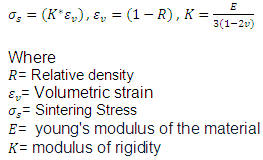 |
|
None |
|
2 |
Skorohod |
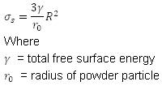 |
|
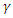 ,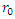 |
|
3 |
Cocks |
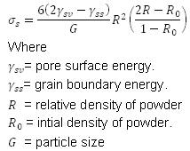 |
|
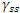 ,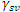 ,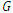 ,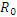 |
|
4 |
Shinagawa |
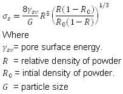 |
|
,, |
|
5 |
Ashby |
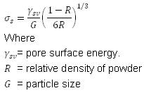 |
|
, |
|
6 |
Raj/Ashby |
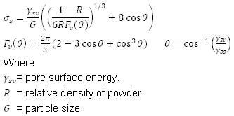 |
|
,, |
The simple elastic one step method computes sintering shrinkage for an elastic object and assumes the part reaches a fully dense state after sintering. Inputs are the initial elemental relative density distribution and elastic material properties. The volumetric strain is computed based on the current relative density.
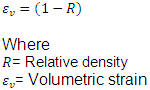 |
|
and then sintering stresses are estimated.
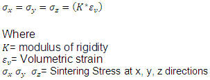 |
|
After that one step elastic solution computes shrinkage.
Applicable object types: Porous, Elastic
Applicable simulation type: Sintering
|
RELATED TOPICS |
| Related keywords: OBJTYP (2D), OBJTYP (3D), YOUNG, POISON |